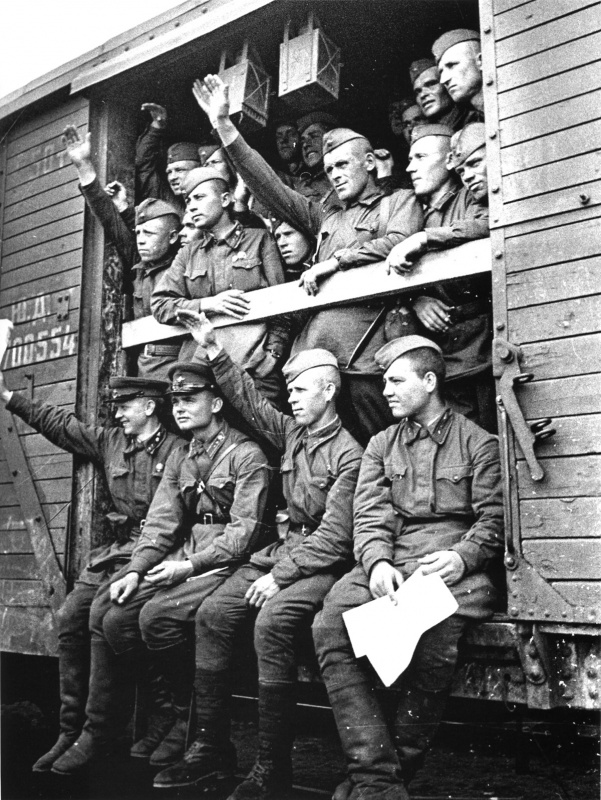

Фото
Отправка советских солдат и командиров на фронт.
АрхивОтправка советских солдат и командиров на фронт.
Архив
Налет немецкой авиации на Москву 26 июля 1941 года. Тонкие трассы — работа ПВО, толстая белая линия — немецкие осветительные ракеты на парашютах для подсветки местности для нанесения и корректировки бомбовых ударов (из-за большой выдержки при фотографировании следы слились в одну линию). На снимке Москва-река, Кремлевская набережная, Кремль с Водовзводной и Боровицкой башнями, Большой Каменный мост.
26.07.1941. Автор: Маргарет Бурк-Уайт
Немецкие солдаты сдаются в плен красноармейцам во время битвы за Москву. Зима 1941 — 1942 гг. Источник: Государственный Зеленоградский историко-краеведческий музей.
АрхивЖители блокадного Ленинграда передвигают трамвайный вагон подальше от фасада разрушенного бомбардировкой дома. 1942
Архив
Советский солдат обнимает свою семью после долгого расставания. Авторское название фото: «Мимо родного села». 1943 год.
Автор: Олег Кнорринг
Командир РККА поднимает на руке латышского мальчика. Снимок сделан вскоре после ввода Красной армии на территорию Латвии. Рига, Латвия. Июль 1940
АрхивСоветские солдаты переходят мост через Дунайский канал в Вене. Источник: Альбом «Фотографии Устинова А.В. 1941–1945», 1978. Австрия, Вена. Май 1945. Автор: Александр Устинов
АрхивСоветские артиллеристы пишут на снарядах «Гитлеру», «В Берлин», «По Рейхстагу». Германия. 01.05.1945. Автор: Олег Кнорринг
АрхивВстреча эшелона с воинами-победителями на Белорусском вокзале в Москве. Аркадий Шайхет.
АрхивСалют Победы в Москве. Вид на Красную площадь. Праздничный салют начался 9 мая 1945 года в 22.00. Последовало тридцать залпов из тысячи орудий в небо, освещаемое прожекторами.
Архив